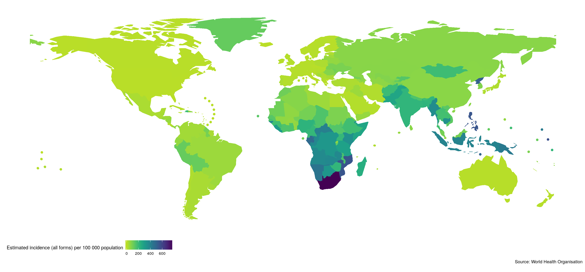
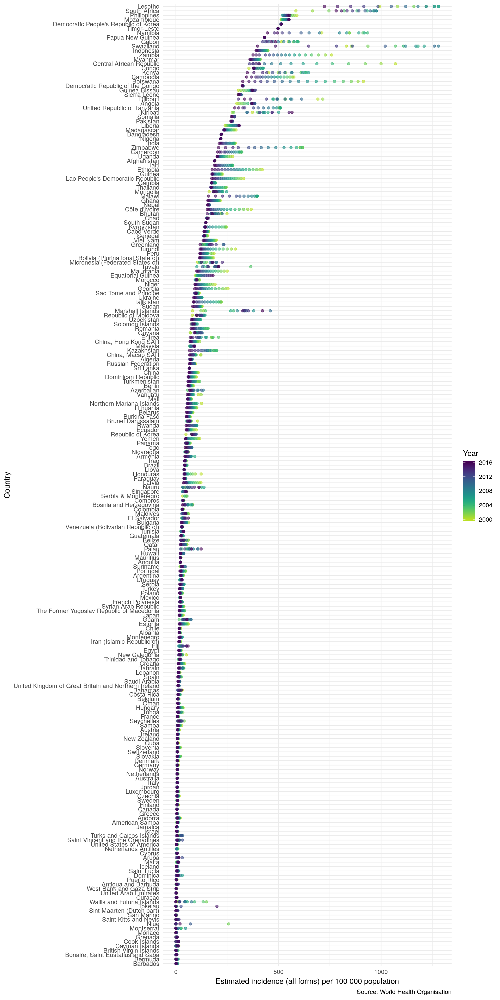
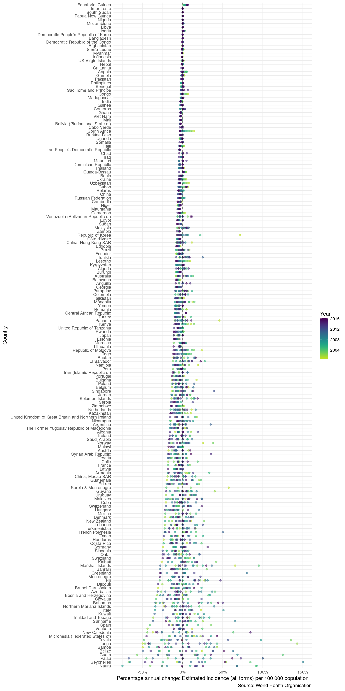
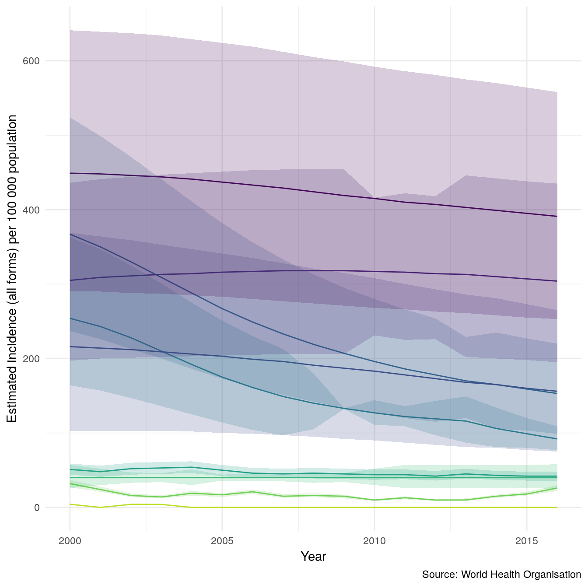
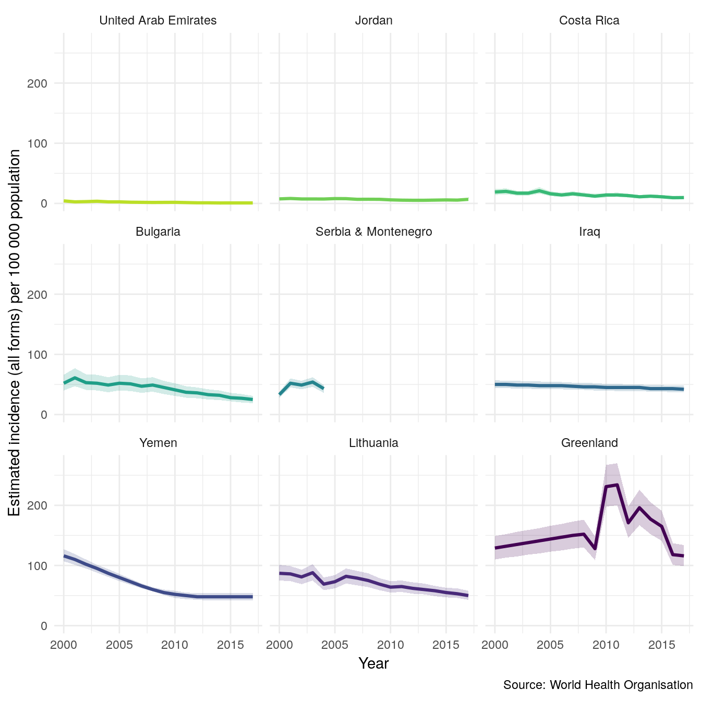
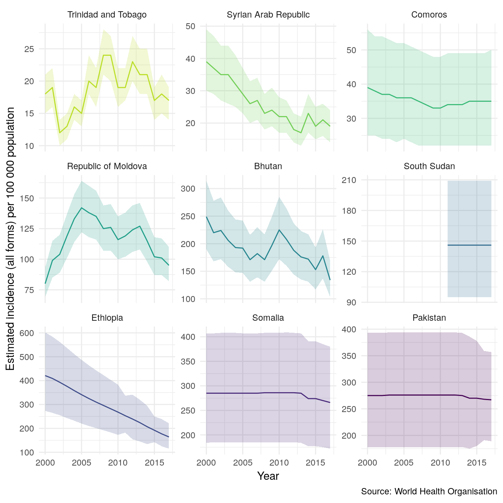
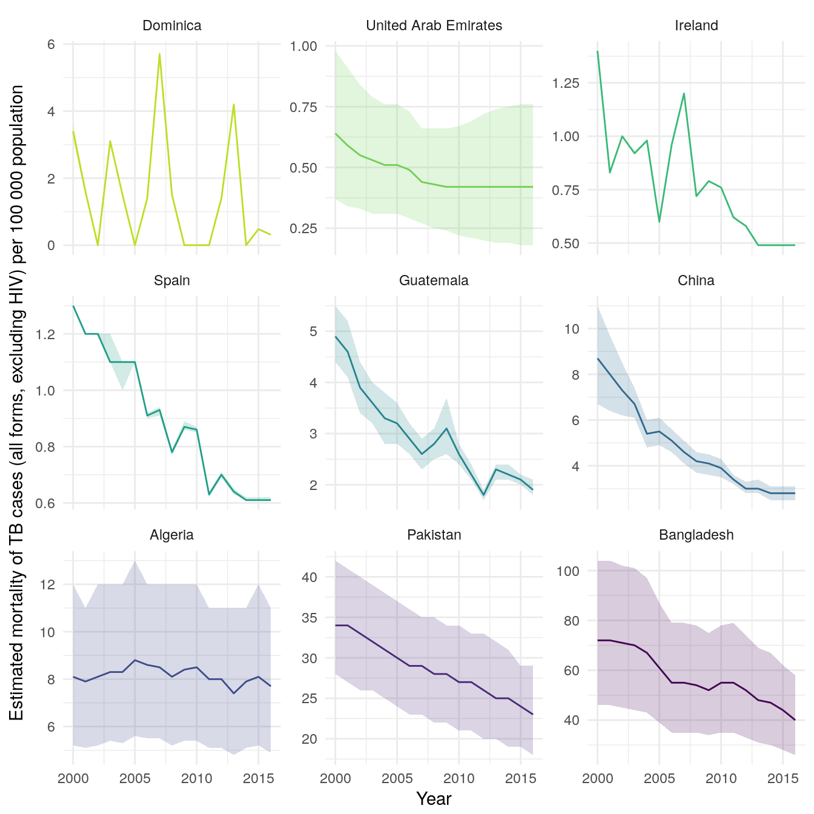
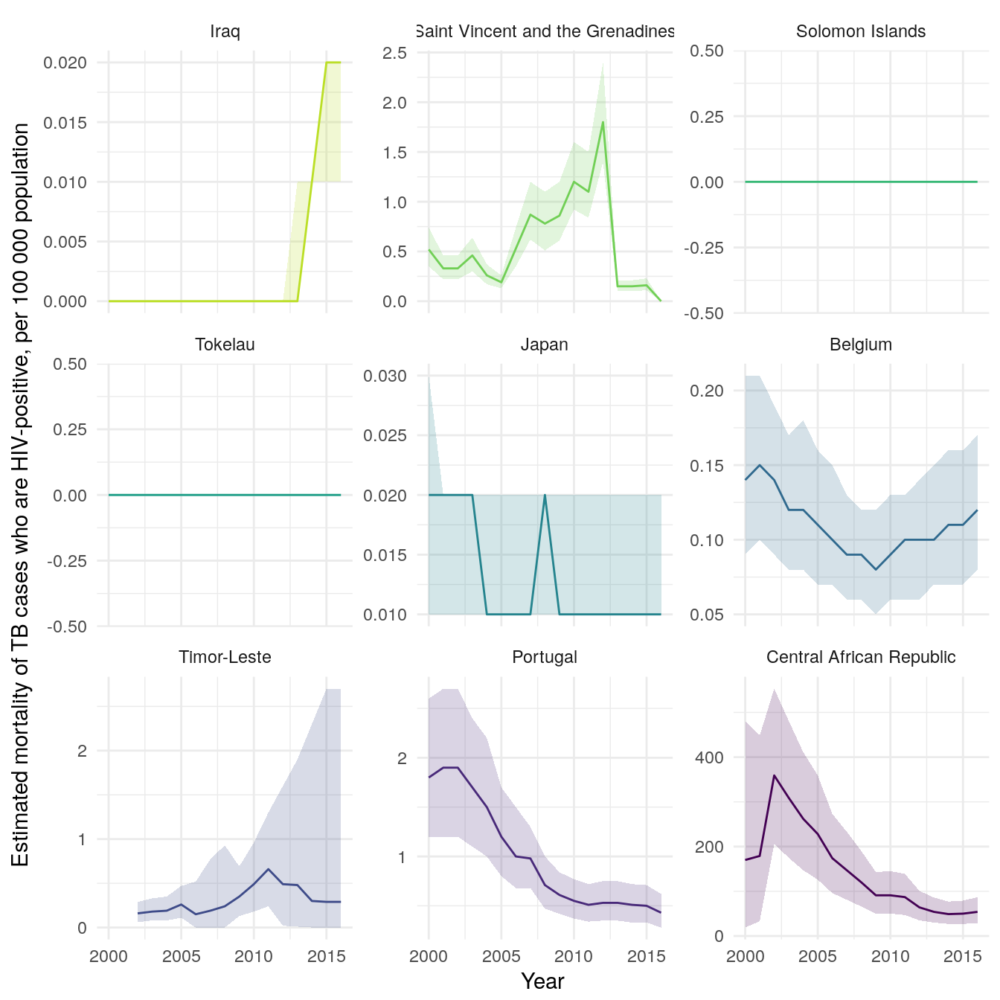

First load the package. We also load several other packages to help quickly explore the data.
library(getTBinR)
library(ggplot2)
library(knitr)
library(magrittr)
library(dplyr)Get TB burden data with a single function call. This will download the data if it has never been accessed and then save a local copy to R’s temporary directory (see tempdir()). If a local copy exists from the current seesion then this will be loaded instead.
tb_burden <- get_tb_burden()
#> Downloading data from: https://extranet.who.int/tme/generateCSV.asp?ds=estimates
#> Saving data to: /tmp/RtmpQd7Nb9/TB_burden.rds
#> Downloading data from: https://extranet.who.int/tme/generateCSV.asp?ds=mdr_rr_estimates
#> Saving data to: /tmp/RtmpQd7Nb9/MDR_TB.rds
#> Joining TB burden data and MDR TB data.
tb_burden
#> # A tibble: 3,651 x 91
#> country iso2 iso3 iso_numeric g_whoregion year e_pop_num e_inc_100k
#> <chr> <chr> <chr> <int> <chr> <int> <int> <dbl>
#> 1 Afghani… AF AFG 4 Eastern Me… 2000 20093756 190.
#> 2 Afghani… AF AFG 4 Eastern Me… 2001 20966463 189.
#> 3 Afghani… AF AFG 4 Eastern Me… 2002 21979923 189.
#> 4 Afghani… AF AFG 4 Eastern Me… 2003 23064851 189.
#> 5 Afghani… AF AFG 4 Eastern Me… 2004 24118979 189.
#> 6 Afghani… AF AFG 4 Eastern Me… 2005 25070798 189.
#> 7 Afghani… AF AFG 4 Eastern Me… 2006 25893450 189.
#> 8 Afghani… AF AFG 4 Eastern Me… 2007 26616792 189.
#> 9 Afghani… AF AFG 4 Eastern Me… 2008 27294031 189.
#> 10 Afghani… AF AFG 4 Eastern Me… 2009 28004331 189.
#> # ... with 3,641 more rows, and 83 more variables: e_inc_100k_lo <dbl>,
#> # e_inc_100k_hi <dbl>, e_inc_num <int>, e_inc_num_lo <int>,
#> # e_inc_num_hi <int>, e_inc_num_f014 <int>, e_inc_num_f014_lo <int>,
#> # e_inc_num_f014_hi <int>, e_inc_num_f15plus <int>,
#> # e_inc_num_f15plus_lo <int>, e_inc_num_f15plus_hi <int>,
#> # e_inc_num_f <int>, e_inc_num_f_lo <int>, e_inc_num_f_hi <int>,
#> # e_inc_num_m014 <int>, e_inc_num_m014_lo <int>,
#> # e_inc_num_m014_hi <int>, e_inc_num_m15plus <int>,
#> # e_inc_num_m15plus_lo <int>, e_inc_num_m15plus_hi <int>,
#> # e_inc_num_m <int>, e_inc_num_m_lo <int>, e_inc_num_m_hi <int>,
#> # e_inc_num_014 <int>, e_inc_num_014_lo <int>, e_inc_num_014_hi <int>,
#> # e_inc_num_15plus <int>, e_inc_num_15plus_lo <int>,
#> # e_inc_num_15plus_hi <int>, e_tbhiv_prct <dbl>, e_tbhiv_prct_lo <dbl>,
#> # e_tbhiv_prct_hi <dbl>, e_inc_tbhiv_100k <dbl>,
#> # e_inc_tbhiv_100k_lo <dbl>, e_inc_tbhiv_100k_hi <dbl>,
#> # e_inc_tbhiv_num <int>, e_inc_tbhiv_num_lo <int>,
#> # e_inc_tbhiv_num_hi <int>, e_mort_exc_tbhiv_100k <dbl>,
#> # e_mort_exc_tbhiv_100k_lo <dbl>, e_mort_exc_tbhiv_100k_hi <dbl>,
#> # e_mort_exc_tbhiv_num <int>, e_mort_exc_tbhiv_num_lo <int>,
#> # e_mort_exc_tbhiv_num_hi <int>, e_mort_tbhiv_100k <dbl>,
#> # e_mort_tbhiv_100k_lo <dbl>, e_mort_tbhiv_100k_hi <dbl>,
#> # e_mort_tbhiv_num <int>, e_mort_tbhiv_num_lo <int>,
#> # e_mort_tbhiv_num_hi <int>, e_mort_100k <dbl>, e_mort_100k_lo <dbl>,
#> # e_mort_100k_hi <dbl>, e_mort_num <int>, e_mort_num_lo <int>,
#> # e_mort_num_hi <int>, cfr <dbl>, cfr_lo <dbl>, cfr_hi <dbl>,
#> # c_newinc_100k <dbl>, c_cdr <dbl>, c_cdr_lo <dbl>, c_cdr_hi <dbl>,
#> # source_rr_new <chr>, source_drs_coverage_new <chr>,
#> # source_drs_year_new <chr>, e_rr_pct_new <dbl>, e_rr_pct_new_lo <dbl>,
#> # e_rr_pct_new_hi <dbl>, e_mdr_pct_rr_new <int>, source_rr_ret <chr>,
#> # source_drs_coverage_ret <chr>, source_drs_year_ret <chr>,
#> # e_rr_pct_ret <dbl>, e_rr_pct_ret_lo <dbl>, e_rr_pct_ret_hi <dbl>,
#> # e_mdr_pct_rr_ret <int>, e_inc_rr_num <int>, e_inc_rr_num_lo <int>,
#> # e_inc_rr_num_hi <int>, e_rr_in_notified_pulm <int>,
#> # e_rr_in_notified_pulm_lo <int>, e_rr_in_notified_pulm_hi <int>The WHO provides a large, detailed, data dictionary for use with the TB burden data. However, searching through this dataset can be tedious. To streamline this process getTBinR provides a search function to find the definition of a single or multiple variables. Again if not previously used this function will download the data dictionary to the temporary directory, but in subsequent uses will load a local copy.
vars_of_interest <- search_data_dict(var = c("country",
"e_inc_100k",
"e_inc_100k_lo",
"e_inc_100k_hi"))
#> Downloading data from: https://extranet.who.int/tme/generateCSV.asp?ds=dictionary
#> Saving data to: /tmp/RtmpQd7Nb9/TB_data_dict.rds
#> 4 results found for your variable search for country, e_inc_100k, e_inc_100k_lo, e_inc_100k_hi
knitr::kable(vars_of_interest)| variable_name | dataset | code_list | definition |
|---|---|---|---|
| country | Country identification | Country or territory name | |
| e_inc_100k | Estimates | Estimated incidence (all forms) per 100 000 population | |
| e_inc_100k_hi | Estimates | Estimated incidence (all forms) per 100 000 population, high bound | |
| e_inc_100k_lo | Estimates | Estimated incidence (all forms) per 100 000 population, low bound |
We might also want to search the variable definitions for key phrases, for example mortality.
defs_of_interest <- search_data_dict(def = c("mortality"))
#> Loading data from: /tmp/RtmpQd7Nb9/TB_data_dict.rds
#> 9 results found for your definition search for mortality
knitr::kable(defs_of_interest)| variable_name | dataset | code_list | definition |
|---|---|---|---|
| e_mort_100k | Estimates | Estimated mortality of TB cases (all forms) per 100 000 population | |
| e_mort_100k_hi | Estimates | Estimated mortality of TB cases (all forms) per 100 000 population, high bound | |
| e_mort_100k_lo | Estimates | Estimated mortality of TB cases (all forms) per 100 000 population, low bound | |
| e_mort_exc_tbhiv_100k | Estimates | Estimated mortality of TB cases (all forms, excluding HIV) per 100 000 population | |
| e_mort_exc_tbhiv_100k_hi | Estimates | Estimated mortality of TB cases (all forms, excluding HIV), per 100 000 population, high bound | |
| e_mort_exc_tbhiv_100k_lo | Estimates | Estimated mortality of TB cases (all forms, excluding HIV), per 100 000 population, low bound | |
| e_mort_tbhiv_100k | Estimates | Estimated mortality of TB cases who are HIV-positive, per 100 000 population | |
| e_mort_tbhiv_100k_hi | Estimates | Estimated mortality of TB cases who are HIV-positive, per 100 000 population, high bound | |
| e_mort_tbhiv_100k_lo | Estimates | Estimated mortality of TB cases who are HIV-positive, per 100 000 population, low bound |
Finally we could both search for a known variable and for key phrases in variable definitions.
vars_defs_of_interest <- search_data_dict(var = c("country"),
def = c("mortality"))
#> Loading data from: /tmp/RtmpQd7Nb9/TB_data_dict.rds
#> 1 results found for your variable search for country
#> 9 results found for your definition search for mortality
knitr::kable(vars_defs_of_interest)| variable_name | dataset | code_list | definition |
|---|---|---|---|
| country | Country identification | Country or territory name | |
| e_mort_100k | Estimates | Estimated mortality of TB cases (all forms) per 100 000 population | |
| e_mort_100k_hi | Estimates | Estimated mortality of TB cases (all forms) per 100 000 population, high bound | |
| e_mort_100k_lo | Estimates | Estimated mortality of TB cases (all forms) per 100 000 population, low bound | |
| e_mort_exc_tbhiv_100k | Estimates | Estimated mortality of TB cases (all forms, excluding HIV) per 100 000 population | |
| e_mort_exc_tbhiv_100k_hi | Estimates | Estimated mortality of TB cases (all forms, excluding HIV), per 100 000 population, high bound | |
| e_mort_exc_tbhiv_100k_lo | Estimates | Estimated mortality of TB cases (all forms, excluding HIV), per 100 000 population, low bound | |
| e_mort_tbhiv_100k | Estimates | Estimated mortality of TB cases who are HIV-positive, per 100 000 population | |
| e_mort_tbhiv_100k_hi | Estimates | Estimated mortality of TB cases who are HIV-positive, per 100 000 population, high bound | |
| e_mort_tbhiv_100k_lo | Estimates | Estimated mortality of TB cases who are HIV-positive, per 100 000 population, low bound |
To start exploring the WHO TB data we map global TB incidence rates in 2016. Mapping data can help identify spatial patterns.
getTBinR::map_tb_burden(metric = "e_inc_100k",
year = 2016)
#> Loading data from: /tmp/RtmpQd7Nb9/TB_burden.rds
#> Loading data from: /tmp/RtmpQd7Nb9/MDR_TB.rds
#> Joining TB burden data and MDR TB data.
#> Loading data from: /tmp/RtmpQd7Nb9/TB_data_dict.rds
#> 1 results found for your variable search for e_inc_100k
To showcase how quickly we can go from no data to plotting informative graphs we quickly explore incidence rates for all countries in the WHO data.
getTBinR::plot_tb_burden_overview(metric = "e_inc_100k",
interactive = FALSE)
#> Loading data from: /tmp/RtmpQd7Nb9/TB_burden.rds
#> Loading data from: /tmp/RtmpQd7Nb9/MDR_TB.rds
#> Joining TB burden data and MDR TB data.
#> Loading data from: /tmp/RtmpQd7Nb9/TB_data_dict.rds
#> 1 results found for your variable search for e_inc_100k
Another way to compre incidence rates in countries is to look at the annual percentage change (currently only available in the development version of the package). The plot below only shows countries with a maximum incidence rate above 5 per 100,000.
higher_burden_countries <- tb_burden %>%
group_by(country) %>%
summarise(e_inc_100k = min(e_inc_100k)) %>%
filter(e_inc_100k > 5) %>%
pull(country) %>%
unique
getTBinR::plot_tb_burden_overview(metric = "e_inc_100k",
interactive = FALSE,
annual_change = TRUE,
countries = higher_burden_countries)
#> Loading data from: /tmp/RtmpQd7Nb9/TB_burden.rds
#> Loading data from: /tmp/RtmpQd7Nb9/MDR_TB.rds
#> Joining TB burden data and MDR TB data.
#> Loading data from: /tmp/RtmpQd7Nb9/TB_data_dict.rds
#> 1 results found for your variable search for e_inc_100k
Now that we have the data lets plot a sample of 9 countries using the inbuilt plot_tb_burden function. Again plotting incidence rates, but this time with 95% confidence intervals. As you can see this isnt a hugely informative graph. Lets improve it!
## Take a random sample of countries
sample_countries <- sample(unique(tb_burden$country), 9)
plot_tb_burden(tb_burden, metric = "e_inc_100k",
countries = sample_countries)
#> Loading data from: /tmp/RtmpQd7Nb9/TB_data_dict.rds
#> 1 results found for your variable search for e_inc_100k
We have faceted by country so that we can more easily see what is going on. This allows us to easily explore between country variation - depending on the sample there is likely to be alot of this.
plot_tb_burden(tb_burden, metric = "e_inc_100k",
countries = sample_countries,
facet = "country")
#> Loading data from: /tmp/RtmpQd7Nb9/TB_data_dict.rds
#> 1 results found for your variable search for e_inc_100k
To explore within country variation we need to change the scale of the y axis.
plot_tb_burden(tb_burden, metric = "e_inc_100k",
countries = sample_countries,
facet = "country",
scales = "free_y")
#> Loading data from: /tmp/RtmpQd7Nb9/TB_data_dict.rds
#> 1 results found for your variable search for e_inc_100k
We might also be interested in mortality in both HIV negative and HIV positive cases in our sample countries. We can also look at this using plot_tb_burden as follows. Note we can do this without specifying the TB burden data, the plotting function will automatically find it either locally or remotely.
plot_tb_burden(metric = "e_mort_exc_tbhiv_100k",
countries = sample_countries,
facet = "country",
scales = "free_y")
#> Loading data from: /tmp/RtmpQd7Nb9/TB_burden.rds
#> Loading data from: /tmp/RtmpQd7Nb9/MDR_TB.rds
#> Joining TB burden data and MDR TB data.
#> Loading data from: /tmp/RtmpQd7Nb9/TB_data_dict.rds
#> 1 results found for your variable search for e_mort_exc_tbhiv_100k
plot_tb_burden(metric = "e_mort_tbhiv_100k",
countries = sample_countries,
facet = "country",
scales = "free_y")
#> Loading data from: /tmp/RtmpQd7Nb9/TB_burden.rds
#> Loading data from: /tmp/RtmpQd7Nb9/MDR_TB.rds
#> Joining TB burden data and MDR TB data.
#> Loading data from: /tmp/RtmpQd7Nb9/TB_data_dict.rds
#> 1 results found for your variable search for e_mort_tbhiv_100k